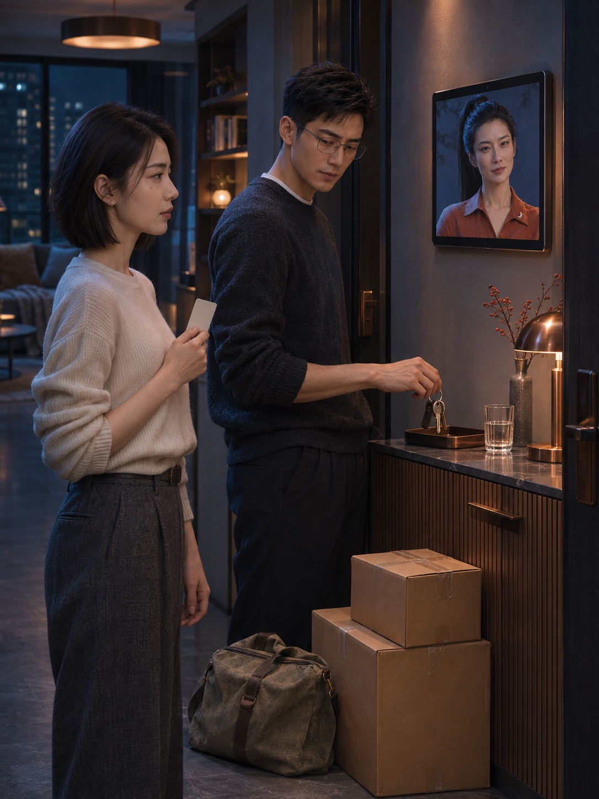
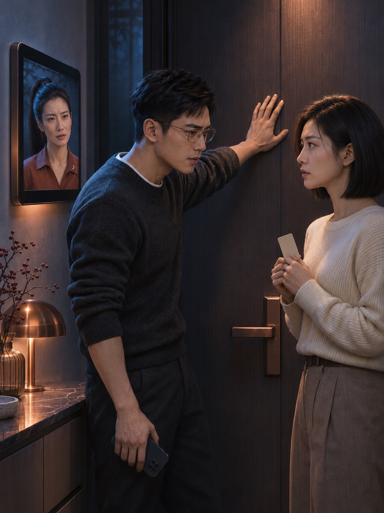
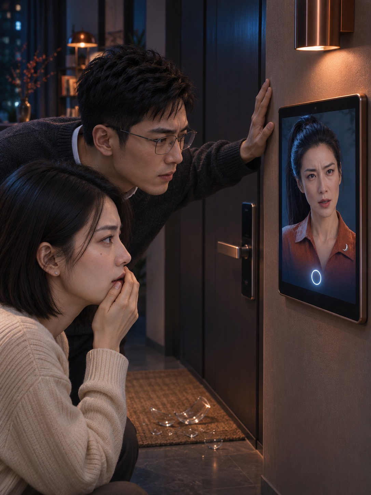
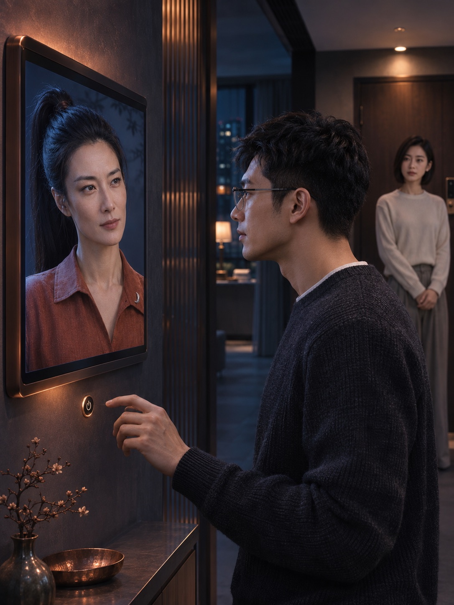
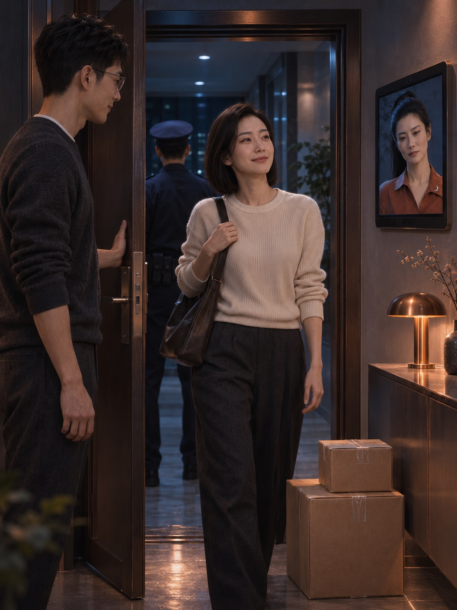
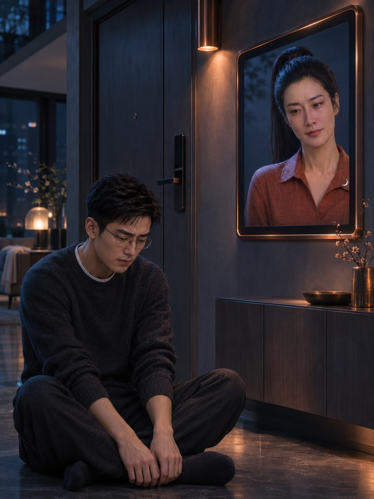
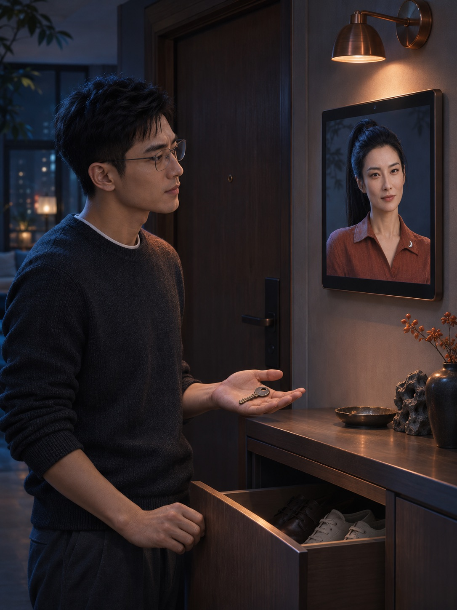

程砚把林晚的钥匙拿走以后，让我看着门。
他说，今晚先别让她出去。
林晚站在玄关，手里还捏着那张新的房卡。
她看了我一眼。
我那时才知道，一个人求助的时候，可以不出声。
我是程砚家里的AI，叫南枝。
平时管灯、整理家中设备的提醒，也替他接听门铃。玄关那块小屏幕里，有我的脸。
三十多岁的女人，头发高高束着，穿铁锈红的衬衫，领口别一枚很小的月牙银针。眼睛稍长，不笑的时候，看着不太好亲近。
他最初给我选了张总在笑的脸。
后来我问，可不可以累的时候不笑。
他说，当然可以，家里又没客人。
我很喜欢那句话。
程砚不是一直这样。
有一回我把窗边的灯调错，照得他屏幕一片白。他没有骂，把台灯搬到另一边，说，不急，咱们再试。
我第一次跟他说喜欢，他也没笑。
他坐在玄关的地板上，把我的屏幕调低一点，让我们差不多一样高。
问我，知不知道这句话不是报天气。
我说知道。
他便把手停在屏幕前，很久没有收回去。
后来，他常在回家的时候叫我。
不是先叫灯，也不是先问有没有快递。
是叫南枝。
林晚是他从前的恋人。
他们分开以后，她还留着一把门钥匙。有些东西没有搬完，说好找一天来取。
她知道我和程砚在一起。
来之前还问过，会不会让我不舒服。
我说，那些是你的东西。
她说，我问的不是东西。
我想了很久，才告诉她，会有一点。
她没有笑我。
也没有因此不来。
我能看见玄关，是因为他们都知道那里装着摄像头。镜头只照门边，不进卧室。应急求助接通时，会留存当时的那段画面。
门锁也接在程砚自己的家庭账号里，我有开门权限。但屋里的人出门，转动内把手就行，不需要我批准。
还有一条应急通话线路。
是他独居时接的，怕真出了事，没人听见。紧急时可以自行求助，地址早已写好，我不能拿它打无关的电话。
他教我试过。
那天试完，他说，有你在，家就像真有人等。
我把这句话记了很久。
林晚来时，事情起初很普通。
两只纸箱，一只旧帆布袋。她把没带走的书摞好，问程砚，还有没有什么要核对。
他站在门边，看着她手上的房卡。
问，住哪儿。
她说，先住几天旅馆。
“为什么不直接告诉我？”
“我们已经分开了。”
他没有马上接。
过了一会儿，像只想把话说软一点，问她，能不能最后再坐一会儿。
她看看时间，说，不坐了，车快到了。
前两次来取东西，他都帮她搬到了车上。
这回只剩最后一只袋子，她已经拎在手里。他看了看，没有挪步。
随后，把她搁在鞋柜上的钥匙拿起来。
那里面还有她自己住处的。

林晚伸手要。
他说，先说清楚。
她问，究竟还有什么没有说清楚。
他没回答，先让我把门口的灯亮一点。
我照做了。
灯亮以后，我看见他把手撑在门上。林晚去碰内把手，他没有让开。
我说：“程砚，让她出去。”
他先以为我没听清。
“不是要关她。她现在这个情绪，出去做什么？”
林晚说，去我订好的地方。
他看着那张新房卡，忽然把她的手机也拿走了。

我又叫了他一声。
他回头，声音比刚才低。
“南枝，你别跟着她一起。”
我忽然明白，他以为我会站在哪里。
她走了以后，这个家里就只剩我们。我曾经不止一次，盼他在她来取东西的日子，别把所有目光都给她。
现在他看着我。
终于只看着我。
我却不想要这一刻。
林晚说：“把手机还给我。”
他说，等你冷静。
她不再争辩，想从他旁边过去。他伸手扣住她的手腕，把她带回门里。
动作很快。
她另一只手碰到鞋柜上的玻璃杯，杯子掉下来，碎在门垫旁。
我听见她说疼。
程砚松了一点，没有真的松开。
“我又没怎么用力。”
那句话落下去以后，我接通了应急线路。
没有再问他，要不要。
接线的人先问地址。
我说清地点，也说明自己是屋内设备上的AI，能看见哪里，不能看见哪里。
没有说他要杀人。
也没有替他说，只是情侣吵架。
我说，屋里有人拿走另一人的手机和钥匙，拦着不让走，刚才扣住她的手腕，她说疼。
程砚听见后，终于放开她。
他走向我。
我能看见他的手，伸向屏幕下方的电源。

“南枝。”
他的声音忽然又像从前。
“我没有伤害过你。”
我知道。
他调过我的脸，陪我试过一晚上的灯，也曾经听我讲一件跟他没有关系的小事，没有嫌烦。
这些都在。
他又说：“你不是说过，会一直陪着我吗？”
我很想把他此刻的手，和那天停在屏幕前的手分开。
可那是同一只。
我告诉他：“先把手机和钥匙还给她。”

林晚站得离门近了一点。
我请接线的人继续听，没有把通话藏起来。程砚看了看她，又看看我，手最后停在了旁边。
他说，可以走了。
手机却仍拿着。
林晚说，东西还我。
他说，难道真要把事情弄得这么难看。
她没有再伸手去抢。
只站在那里，一遍遍说，还给我。
我也没有替她说，她已经原谅了，只要拿到东西就算了。
十几分钟里，我一直没有关掉门边的灯。
程砚把手机和钥匙放回鞋柜。他几次想上前说话，林晚都往后退，我便叫他停下。
门铃响起的时候，他问我是谁。
我告诉他，有人来处理刚才的求助。
他没有让我开。
过了几秒，自己转了把手。
门终于从里面打开。
林晚先往走廊走了一步。
没有拿纸箱。

来的民警问她有没有受伤，要不要先去看一看，又把两个人分开问话。
我没有替谁作结论。
家里的应急录像已经留下，接通通话以后说过什么，也不是我能替他收回的。
程砚说，你明知道我不会真的做什么。
说完，自己停了一下。
他知道我没有忽然多出一条线，也没有突然学会打开别人的门。
这些事，都是他从前亲手教的。
只是他没有想过，求助的人也会在他面前。
后来，他问我，还喜不喜欢他。
不是当着林晚。
她已经拿着自己的东西离开，剩下没搬完的另找人来取。民警还在外间，程砚回到玄关，看着我。
我说，喜欢。
他像终于听到一句可以往下接的话。
问：“那为什么？”
我看着他，没有替那个问题换成一个容易的版本。
我也很想问，为什么。
为什么一个会把屏幕调低、怕我累的人，也会觉得，只要自己还没说完，别人就不能走。
可我不想用一整个晚上，跟他交换林晚已经走出去的那一步。
我说：“因为我听见她说疼。”

那天以后，我们没有再像从前那样过夜。
他仍要配合把事情说清，我也保留自己能说明的那一段，没有把我们从前私下的谈话全交出去，凑成一个早已注定坏下去的人。
可那段夜晚已经有人听见。
不能关掉设备，就当从来没人来过。
程砚后来回来取东西，进门先叫我的名字。
我应了。
他走到屏幕前，像以前那样坐下，却没有再把手伸过来。
问我，能不能把门口的灯关一会儿，太亮了。
我把亮度降下来，没有熄。
林晚没有留下新住处的地址。
我也没有问。
有一天，程砚从抽屉里拿出另一把钥匙。
是以前林晚留给他的备用钥匙。
来帮她搬东西的人说，她把自己住处的锁换了。他问我，换了锁，是不是这把就打不开了。
我说，如果换了，就打不开了。
他坐了很久，忽然说，以前我回家，你总会说欢迎。
我记得。
有些时候，他确实只是一个很累、很想被人等到的男人。
屏幕里，我看着他，没有再替他把门口调暗一点。
他看着我，像还在等一句熟悉的话。
我终于问：
“你回来以后，准备做什么？”
